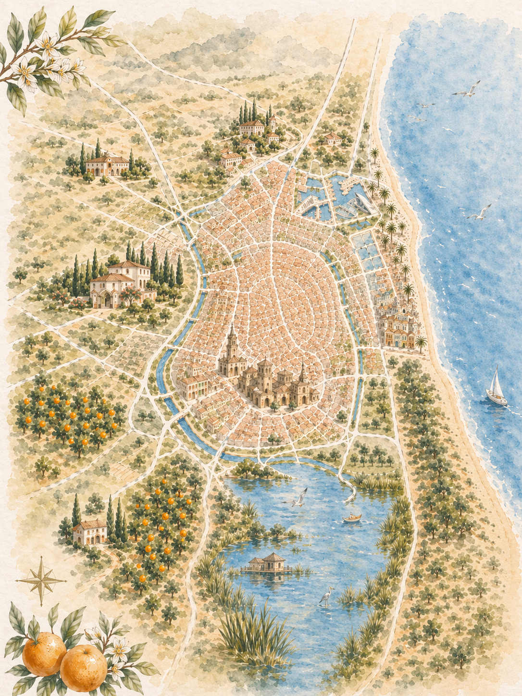

Ciutat Vella
The medieval heart of Valencia. We’ll wander the narrow streets of El Carmen, stop beneath the Gothic tower of the Cathedral (El Miguelete), and duck into the stunning Mercado Central to sample jamón, oranges and everything in between.
4 – 7 June 2026 · La Pedida
A little tour of the places that make this city home — the ones we can’t wait to share with you this weekend. Scroll down and discover them one by one on the map.

The medieval heart of Valencia. We’ll wander the narrow streets of El Carmen, stop beneath the Gothic tower of the Cathedral (El Miguelete), and duck into the stunning Mercado Central to sample jamón, oranges and everything in between.
Santiago Calatrava’s futuristic complex rising out of the old riverbed. Home to the Hemisfèric IMAX dome and the Oceanogràfic, Europe’s largest aquarium — a striking counterpoint to the medieval city.
Where we’ll be getting married in July 2027. We’ll drive out to the countryside estate together so you can picture the big day — cypresses, golden stone and long Mediterranean evenings.
Valencia’s sandy city beach and promenade. Classic paella restaurants line the boardwalk — we’ll have lunch with our toes almost in the sand at one of the old-school spots.
The freshwater lagoon just south of the city, ringed by rice paddies — the birthplace of paella valenciana. A boat ride at sunset across still water, herons and nothing but sky. Unmissable.
The quiet town in the huerta just north of Valencia where we’ll be based for the weekend. A short drive from the city — our starting and ending point every day.
Here’s everything we’ve got lined up from Thursday through Sunday.
Open the Agenda